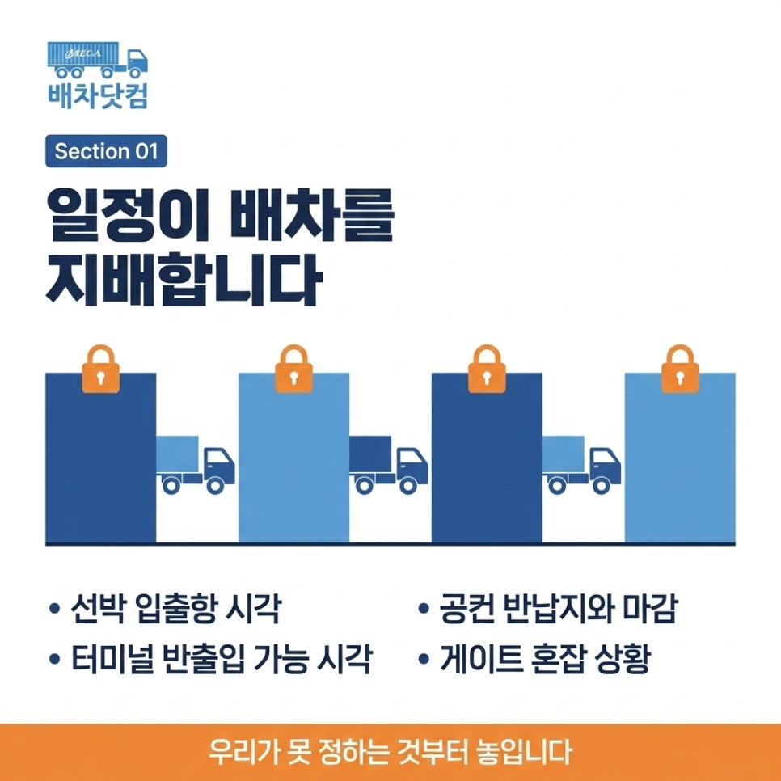
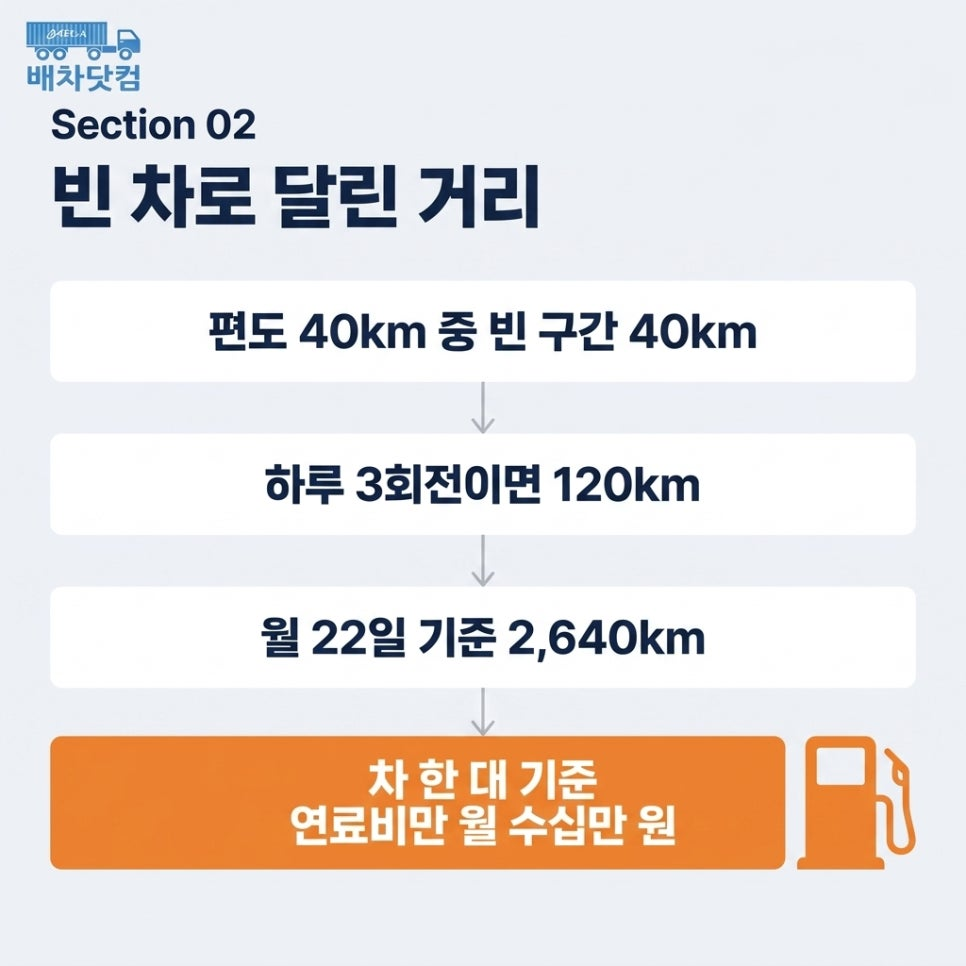
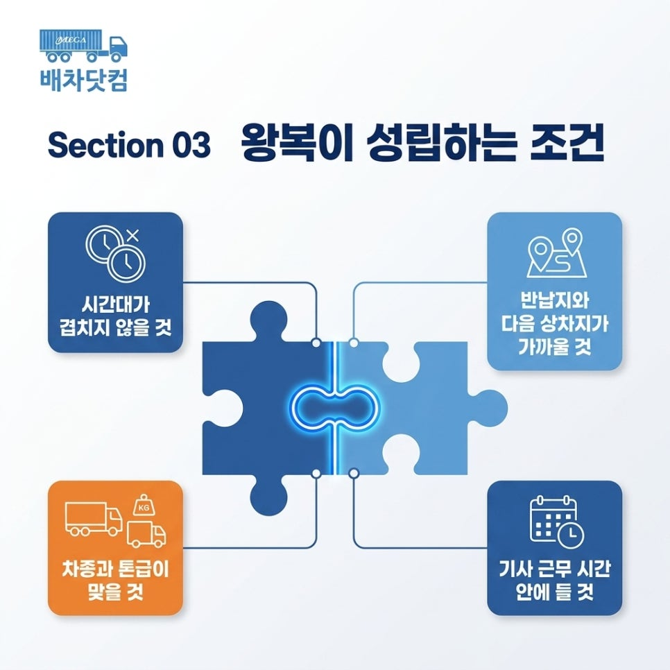
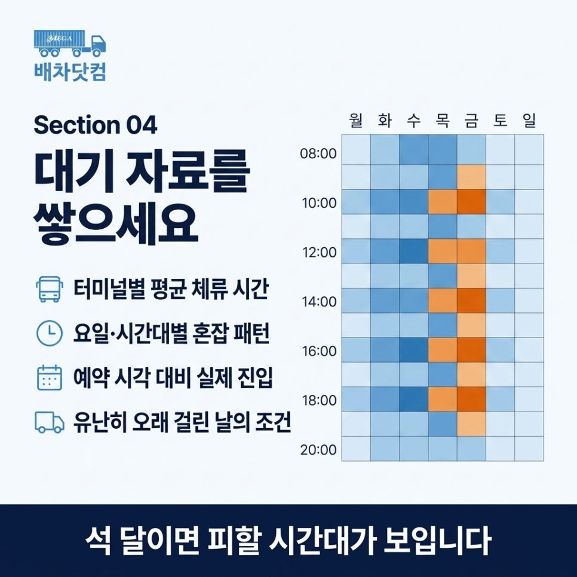
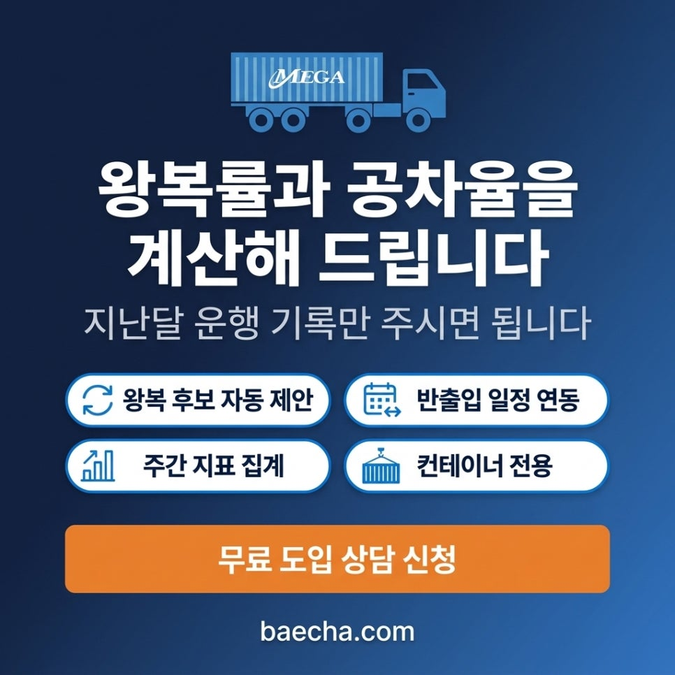

안녕하세요. 컨테이너 수송 전용 관리 도구 배차닷컴을 개발·공급하는 ㈜위솔루션입니다.
같은 대수로 같은 시간을 뛰는데 회사마다 남는 돈이 다릅니다. 단가 차이가 아니라 빈 차로 달린 거리 차이인 경우가 대부분입니다. 컨테이너 반출입 관리를 숫자로 바꿔서 보는 법을 정리했습니다. 여기 나오는 수치는 저희 쪽 사례 기준입니다.
Section 01
일정이 배차를 지배합니다

컨테이너 반출입 관리가 일반 화물과 결정적으로 다른 지점이 여기입니다. 우리가 시각을 정하지 못합니다.
우리가 못 정하는 것
- 선박 입출항 시각
- 터미널 반출입 가능 시각
- 공컨 반납지와 마감
- 게이트 혼잡 상황
이 네 가지가 먼저 정해지고, 그 틈에 우리 차를 끼워 넣는 구조입니다. 그래서 이 업무는 차를 배정하는 일이 아니라 시간표를 맞추는 일에 가깝습니다. 순서를 거꾸로 잡으면 하루 종일 대기만 하다 끝납니다.
Section 02
빈 차로 달린 거리를 계산해 보세요

한 달치만 뽑아 보시면 대부분 놀라십니다. 막연히 느끼시던 것과 실제 숫자는 차이가 큽니다.
한 대만 계산해 보시고, 거기에 보유 대수를 곱해 보시면 됩니다.
- 편도 40km 왕복 중 빈 구간 40km
- 하루 3회전이면 120km가 빈 주행
- 월 22일 기준 2,640km
- 연료비만 월 수십만 원, 차 한 대 기준
여기에 그 사이에 못 받은 건까지 더하면 실제 손실은 훨씬 커집니다. 30대를 굴리는 회사라면 매달 상당한 금액이 그냥 도로에 뿌려지는 셈입니다. 컨테이너 반출입 관리를 손보면 가장 먼저 회수되는 부분이기도 합니다.
Section 03
왕복이 성립하는 조건

빈 구간을 없애려면 돌아오는 짐이 있어야 합니다. 그런데 아무 짐이나 되는 게 아닙니다.
네 가지가 동시에 맞아떨어져야 비로소 한 묶음이 됩니다.
- 시간대가 겹치지 않을 것
- 반납지와 다음 상차지가 가까울 것
- 차종과 톤급이 맞을 것
- 기사 근무 시간 안에 들어올 것
사람이 머릿속으로 맞추면 하루 두세 건이 한계입니다. 후보가 수십 개인데 조건이 네 개면 따져야 할 조합이 수백 가지가 되니까요. 이건 감이 아니라 계산으로 풀어야 하는 문제입니다. 경험 많은 담당자도 여기서는 기계를 못 이깁니다.
Section 04
대기 시간을 자료로 쌓으세요

밀리는 건 어쩔 수 없다고들 하시는데, 기록해 두면 줄일 수 있는 부분이 분명히 보입니다.
석 달만 성실히 기록하시면 그 뒤로는 계속 써먹을 수 있는 자산이 됩니다.
쌓아 둘 것
- 터미널별 평균 체류 시간
- 요일과 시간대별 혼잡 패턴
- 예약 시각 대비 실제 진입 시각
- 유난히 오래 걸린 날의 조건
석 달만 모여도 어느 시간대를 피해야 하는지 나옵니다. 그때부터는 배차를 짤 때 혼잡 구간을 알아서 비껴갈 수 있습니다. 컨테이너 반출입 관리에서 자료가 곧 자산이 되는 지점입니다.
Section 05
매주 볼 지표 네 가지

관리하려면 숫자가 있어야 합니다. 컨테이너 반출입 관리를 지표로 바꾸면 이 넷이면 충분합니다.
월간으로 보면 이미 늦습니다. 주 단위로 봐야 다음 주 배차에 반영이 됩니다.
- 왕복률 : 전체 건 중 왕복으로 묶인 비율
- 공차율 : 총 주행 중 빈 주행 비중
- 회전 수 : 차량 한 대당 하루 평균 횟수
- 평균 체류 : 터미널별 진입 소요
배차닷컴은 화물정보망 인증과 화물운송실적신고(FPIS) 대행업체 인증을 갖춘 컨테이너 전용 도구입니다. 반출입 일정과 배차 화면이 붙어 있어 왕복 후보를 자동으로 올려 주고, 위 네 가지가 매주 집계됩니다.
지난달 운행 기록만 주시면 왕복률과 공차율을 먼저 계산해 드립니다. 업계 평균과 비교해서 어느 정도인지도 같이 알려 드립니다. 컨테이너 반출입 관리는 물량을 더 받아 오는 것보다, 지금 있는 물량을 촘촘히 묶는 쪽이 훨씬 빠릅니다.
이 글은 네이버 블로그에 먼저 실린 글입니다.